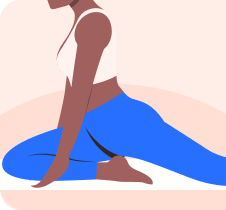

Pick a plan
Three shelves — Quick and easy, Tailored for you and Stretch by body parts. Every card shows its stretch count and total duration, so you can match a routine to the ten minutes you have.
iOS & Android · Free plans included
Flexi is a stretching app built for women who want to feel less stiff without designing a routine themselves. Pick a plan, put the phone down, and let the timer, the illustrations and the voice guidance carry you through.
No account. No sign-in. Your history stays on your device.
Stretch 3 of 12
Seated Neck Release
How it works
There is no onboarding quiz and nothing to configure. The Today screen greets you and shows the plans straight away, grouped so you can find one that fits the time and the space you actually have.
Three shelves — Quick and easy, Tailored for you and Stretch by body parts. Every card shows its stretch count and total duration, so you can match a routine to the ten minutes you have.
A 15-second get-ready countdown, then a 30-second hold with a countdown ring around the illustration. Tap Press When Ready to start early. Your screen stays awake the whole way through.
Finishing saves the session automatically — minutes stretched, exercises done, body parts targeted — and your streak ticks over. Nothing to log by hand.
The plans
Every plan is drawn from a catalogue of 50+ illustrated stretches tagged to eight muscle groups: shoulder & neck, back, chest, arms & wrists, glutes, hip flexors, thighs and lower legs.




Quads, hamstrings and IT band — the tightness that comes from sitting and from running.
For the ache that builds over a day at a screen. Read the desk guide →
Lower and mid back mobility, done lying down. Read the back guide →
The muscles that shorten from sitting all day. Read the hip guide →
Morning wake-up and evening wind-down routines are next on the list.
During a session
The whole session is designed so you never have to look at the screen to know what is happening — which matters when your face is somewhere near your knee.
Staying in control
A stretching app that cannot be interrupted is a stretching app you stop opening.
Progress
Flexibility comes from showing up often, not from one heroic session. Flexi keeps the score so you can see the habit adding up.
Your current run of consecutive days, on both the home and Progress screens — and your longest streak ever, as a record to beat.
Total time stretched and exercises completed, filtered to the last 7 days, last 30 days, or lifetime.
A single reminder at a time you choose. Turn it off whenever you like — the app is not built to nag.
History, streaks and settings live in a local database on your device, carried over from previous versions. No account, no upload.
Why ten minutes a day
Consistent stretching is one of the cheapest things you can do for how your body feels day to day. Over weeks of daily practice, people commonly report:
Four guides that cover the questions most people have on day one.
Pricing
You can run a complete session — the timer, the voice guidance, the celebration screen, the streak — without paying anything. Locked plans are marked on their cards, so nothing is ever a surprise part-way through a routine.
$0
Monthly or yearly · real store prices in your currency
Prices always come from the App Store or Google Play in your own currency, so the amount you see is the amount you are charged. Manage or cancel your subscription in the store at any time.
FAQ
Yes. Flexi is free to download, and several plans — including Quick Breaks at Work, Thighs and Slim and Tone — are free forever, so you can run a complete session before paying anything. A subscription unlocks the rest of the library.
Most plans run about ten minutes. Each stretch gets a 15-second get-ready countdown and a 30-second timed hold, and every plan card shows its stretch count and total duration before you start.
No. Every routine is bodyweight only. The plans are built around where you are — a desk, a living room, a hotel room, the park or the gym — so you can stretch in the space you have.
Yes. The stretches, illustrations and audio ship with the app, and your history, streaks and reminder settings are stored on your device rather than in an account.
There is a dedicated Postpartum plan built around gentle recovery. Flexi is a fitness and wellbeing app, not a medical device — talk to your doctor or a physiotherapist before starting a new routine, especially if you are pregnant or recently postpartum.
Subscriptions are billed by the App Store or Google Play, and you can manage or cancel yours there at any time. Settings in the app links straight through to the right page, and Restore Purchases brings your access back on a new device or after a reinstall.
Yes — the same plans, the same session flow, the same progress screens. Switching devices does not mean relearning anything.
Download Flexi, open the Today screen, and start a free plan. No account to create, nothing to set up.